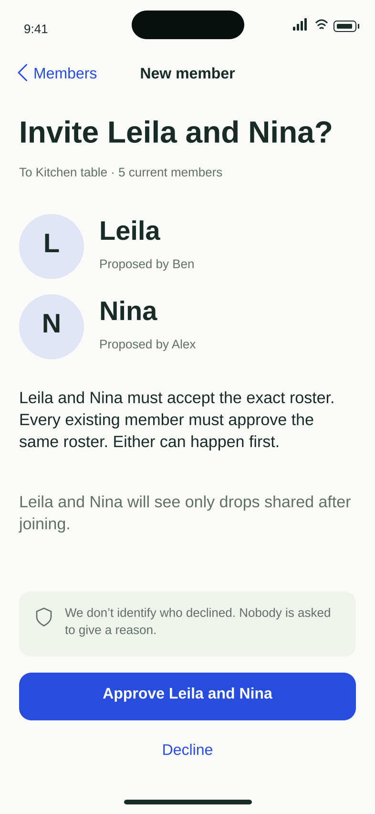
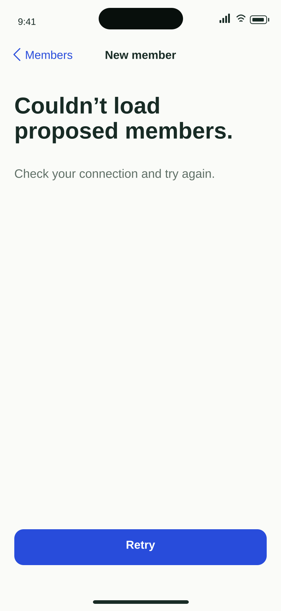
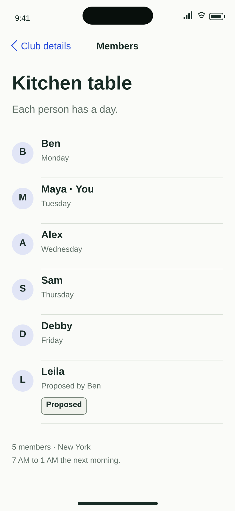
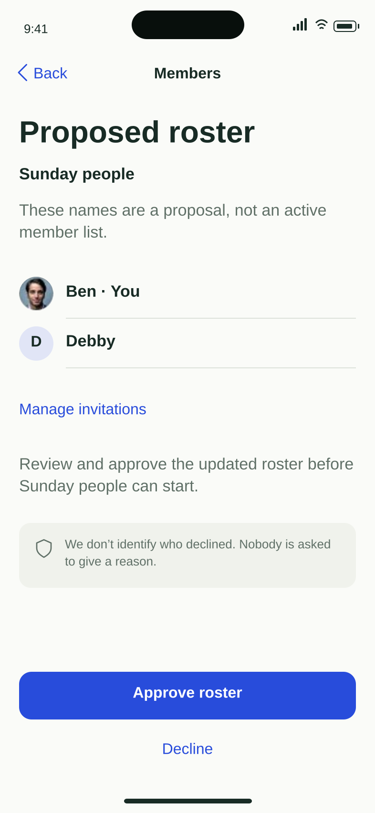
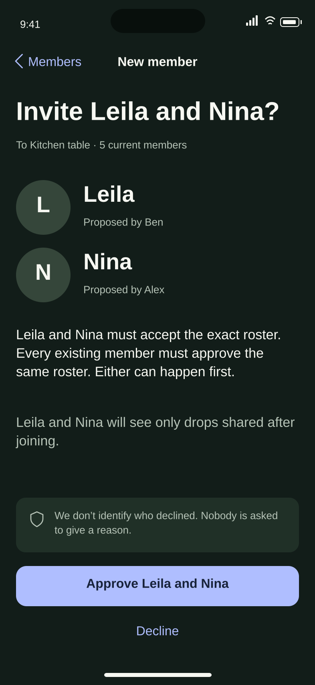
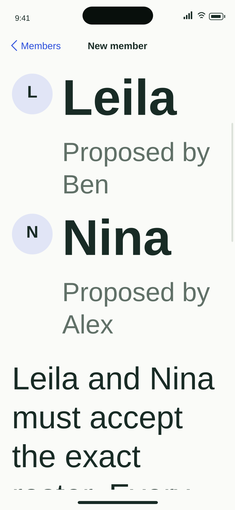
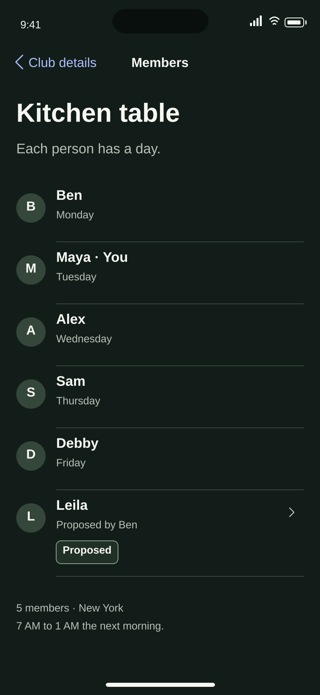
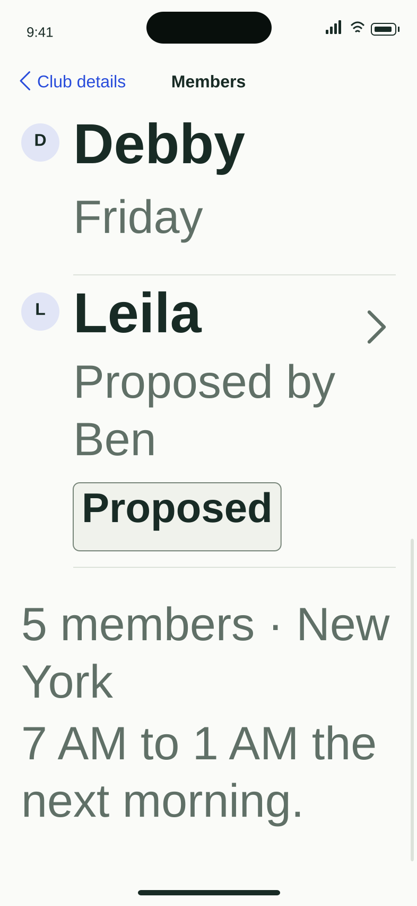

Stage B1: whole-roster approval, proposed rows and review recovery. Eleven requested frames, in order. Select a proof to open its portable SVG. This is an inspection gallery, not a runnable app.
Frames 1, 8 and 9 preserve the brief’s five-current-plus-two-candidate layout stress scene. It exceeds the six-person capacity and must not become a valid API seed. See the guide for this and the decline lifecycle distinction.







